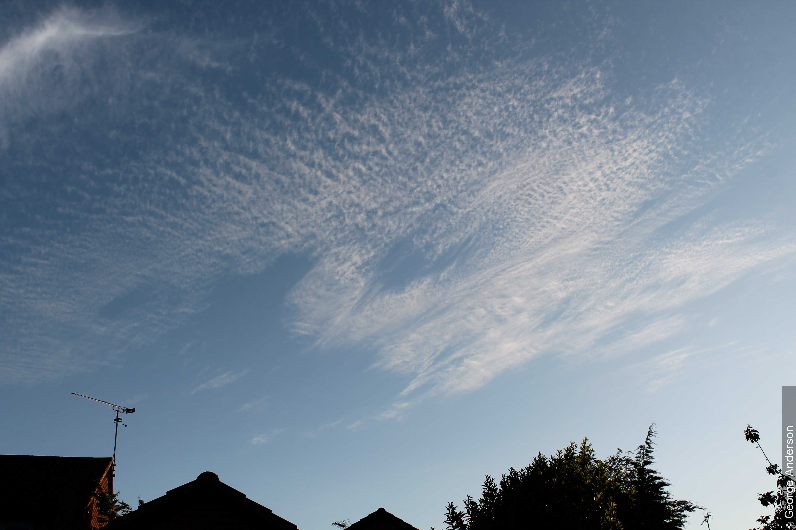

巻積雲
目次
- 巻積雲
- 目次
- 巻積雲の定義（セクション2.3.2.1）
- 種
- 変種
- 部分的な特徴と付随雲（セクション2.3.2.4）
- 巻積雲が形成される可能性のある雲（セクション2.3.2.5）
- 巻積雲と他類の類似した雲との主な違い（セクション2.3.2.6）
- 物理的構成（セクション2.3.2.7）
- 説明的備考（セクション2.3.2.8）
- 画像ギャラリーから
巻積雲の定義（セクション2.3.2.1）
陰影のない薄い白色の斑状、シート状、または層状の雲であり、粒子やさざ波などの形をした非常に小さな要素で構成され、それらが結合しているか分離しているかを問わず、多かれ少なかれ規則的に配列されている。 要素の大部分は、見かけの幅が1度未満である。
種
巻積雲 層状雲 (Cc str) - CCH 1953（セクション2.3.2.2.1）
比較的広範囲にわたるシート状または層状の巻積雲であり、時折切れ間を示す。

彩雲を伴う巻積雲 層状雲 波状雲および巻層雲 毛状雲
この写真は、巻層雲の層の下にある巻積雲を示している。 この巻層雲は細い筋を持つ繊維状のベールの形をしており、したがって種は毛状雲（fibratus）である。 画像の上部には、陰影がなく非常に小さな要素で構成される典型的な巻積雲の薄い白い層があり、そのほとんどは見かけの幅が1度未満である。 中央には顕著なうねりのセットがあり、上部の近くには、互いにほぼ平行であるが異なる方向に並んでいる、より細かい一連のうねりがある。 これらは変種の波状雲（undulatus）である。 画像の中央には、微かなパステルカラーの彩雲が見える。
巻積雲 レンズ雲 (Cc len) - Ley 1894, CEN 1930（セクション2.3.2.2.2）
レンズまたはアーモンドの形をした巻積雲の斑状雲。 しばしば非常に細長く、通常は輪郭がはっきりしている。 これらの斑状雲は多かれ少なかれ孤立しており、大部分は滑らかで、全体的に非常に白い。 これらの雲では彩雲が観察されることがある。

巻積雲 レンズ雲
巻積雲の種であるレンズ雲（lenticularis）であり、レンズまたはアーモンドのような形をした斑状雲として現れる。 それらはしばしば非常に細長く、通常は輪郭がはっきりしている。 斑状雲は大部分が滑らかであり、全体を通して非常に白い。 この画像は全体的に明瞭なうねりを示しており、変種の波状雲（undulatus）となっている。 また、巻積雲で時折見られる小さな横方向のさざ波もいくつか示している。
巻積雲 塔状雲 (Cc cas) - CCH 1953（セクション2.3.2.2.3）
一部の要素が共通の水平な底面から隆起し、小さな塔の形で垂直に発達した巻積雲。 地平線から30度以上の角度で観察した場合、塔の見かけの幅は常に1度未満である。 塔状雲（castellanus）は、その高度における不安定性によって発達する。

巻積雲 塔状雲 波状雲
これは、2つの層（変種 二重雲: duplicatus）に配置された巻積雲の塔状雲（castellanus）、房状雲（floccus）、および層状雲 波状雲（stratiformis undulatus）の複雑な空である。 巻雲の毛状雲（fibratus）および濃密雲（spissatus）も存在している。 巻雲と巻積雲の組み合わせは、中緯度の空における一般的な特徴である。
1および2で見られるように、地平線低くにいくつかの飛行機雲が見られる。
巻積雲が優勢であるため、これはCH = 9としてコード化される。
巻積雲 房状雲 (Cc flo) - Vincent 1903, CCH 1953（セクション2.3.2.2.4）
非常に小さな積雲状の房で、その下部は多かれ少なかれぼろぼろである。 地平線から30度以上の角度で観察した場合、各房の見かけの幅は常に1度未満である。 房状雲（floccus）は、その高度における不安定性によって発達する。 巻積雲の房状雲は、巻積雲の塔状雲の底面が消散することによって、後者から進化することがある。

尾流雲を伴う巻積雲 房状雲
この画像の上部は、下部が多かれ少なかれぼろぼろである非常に小さな積雲状の房で構成される巻積雲を表示している。 これは房状雲（floccus）の種である。 地平線から30度以上の角度で観察した場合、房の見かけの幅は常に1度未満（小指の幅）である。 巻積雲の房状雲は、底面が消散した塔状雲（castellanus）の進化形である可能性がある。 2と3において、薄い尾流雲（virga）が局所的に存在する。 中央の巻積雲は、いくつかの尾流雲を伴う層状雲（stratiformis）の種のように見え、雲がやや拡散しているように見える。 これは、巻積雲から巻雲への変化が起こっていることを示唆している。 これは、より多くの巻雲が存在する画像の最下部で既に起こっている可能性が高い。 近くの雲高計は、雲底を6 100〜7 000 mと測定した。
変種
巻積雲 波状雲 (Cc un) - Clayton 1896, CCH 1953（セクション2.3.2.3.1）
1つまたは2つのうねりのシステムを示す巻積雲。

巻積雲 層状雲 波状雲
イギリス諸島の南西を中心とする高気圧（1 027 hPa）から、高圧の尾根がイギリス南部を横切って伸びていた。 前線雲がイギリス諸島の北部および西部に影響を与えたが、南部では、高圧の尾根の下で空はより晴れており、様々な形態の高層の巻雲状の雲が西から東へ漂っているだけであった。 この写真は、巻積雲の層状雲 波状雲（Cirrocumulus stratiformis undulatus）の領域を示している。 この雲は、陰影がなく、粒子やさざ波の形をした非常に小さく高層の白い雲の要素によって、巻積雲として識別される。 広範な層であるため種は層状雲（stratiformis）であり、さざ波は変種を波状雲（undulatus）として特定している。
巻積雲 蜂の巣状雲 (Cc la) - CCH 1953（セクション2.3.2.3.2）
多かれ少なかれ規則的に分布した小さな丸い穴（多くは縁がギザギザしている）を示す、斑状、シート状、または層状の巻積雲。 雲の要素と隙間は、しばしば網や蜂の巣のように配置される。

巻積雲 レンズ雲 蜂の巣状雲
この画像は、それ以外は晴れた日の空の天頂にある巻積雲を示している。 雲は陰影のない明るい白色であり、小さな要素で構成されている。 やや拡散した縁を持つ、レンズ雲（lenticularis）の種を示す全体的なレンズ形状を持っている。 その微細なハニカム構造を持つ蜂の巣状雲（lacunosus）の変種は、画像の上部に向かって詳細に見ることができる。 気流を代表するサウンディングは、約7 000 mの雲の高さを示唆している。
部分的な特徴と付随雲（セクション2.3.2.4）
特に巻積雲の塔状雲や房状雲から落下する、小さな尾流雲が存在することがある。
巻積雲は時折、乳房雲を示す。
穴開き雲はめったに観察されず、巻積雲が強く過冷却された水滴で構成されている場合にのみ観察される。
尾流雲

尾流雲を伴う巻積雲 塔状雲
この写真は、小さな雲の要素で構成される巻積雲の斑状雲と2つの線を示している。 巻積雲は通常白色であるが、ここでは太陽の角度が低いため、いくつかの薄い灰色が見える。 特に上の線では、要素は共通の底面で接続された塔（銃眼）の形をした積雲状の隆起として垂直に発達しており、それらは横から見ると最も明白であり、塔状雲（castellanus）の種である。 地平線から30度以上の角度で観察した場合、塔の見かけの幅は常に1度未満である。 詳しく調べると、雲の線の下および底面に薄い尾流雲（virga）の微妙な領域（3と4で見られる）があり、それらをいくらか拡散させていることがわかる。 左側では、線が氷化して密度の高い巻雲 濃密雲（Cirrus spissatus）に変化している。 右側では、要素のいくつかが房状雲（floccus）に似ており、上部近くには薄い巻雲が見える。 これらの高層雲は、地平線の前線雲に続く寒冷前線通過後の雲である。 遠くには、いくつかの暗い灰色の高積雲が見える。
乳房雲

尾流雲と乳房雲を伴う巻積雲 房状雲 波状雲
巻積雲は通常、ここに見られるような雲の斑状雲として現れ、小雲片（cloudlets）とも呼ばれる非常に小さな要素で構成されている。 両方の側面は、類の典型である。 要素は1度未満の見かけの幅を持ち、房状雲（floccus）の種である。 うねりは変種の波状雲（undulatus）を示し、結合した房状雲の下には、部分的な特徴である尾流雲（virga）の短い痕跡がある。 画像の上部付近には、部分的な特徴である乳房雲（mamma）の垂れ下がる隆起のように見えるものがある。 巻積雲のそのような高さでの乳房雲は非常に小さいことに留意すべきである。
穴開き雲

巻積雲 層状雲 波状雲 穴開き雲
見かけの幅が1度未満の小さな雲の要素を持つ、薄く白い高層雲の層は、巻積雲の層状雲（Cirrocumulus stratiformis）である。 左上から右下に向かううねりが与えられていることから、変種の波状雲（undulatus）も存在している。 画像の左側には、左から右上に向かうより大きいうねりを伴う、より低い巻積雲の層（二重雲: duplicatus）の示唆がある。 ただし、この詳細は、特に画像の左上と左側面に顕著な、4と5におけるより低い巻雲の層によってかなり不明瞭になっている。
それにもかかわらず、写真の主な特徴は明らかに画像中央上部の大きな穴であり、その下には氷晶の明るく白い降下筋（fallstreak）がある。 この穴は部分的な特徴である穴開き雲（cavum）であり、一般に「フォールストリークホール」または「ホールパンチ雲」として知られている。
部分的な特徴である穴開き雲は、0 °C未満の温度で液体の状態にある過冷却された水滴からなる薄い雲層において氷化が起こる際に形成される。 過冷却された水滴が氷化するにつれて、結果として生じた氷晶が雲層からより低い高度へと尾流雲（virga）または降下筋として落下する。 結果として生じる雲の穴は通常、氷化プロセスが継続するにつれて時間とともに大きくなる。
巻積雲が形成される可能性のある雲（セクション2.3.2.5）
巻積雲はしばしば以下のものから進化して形成される：
- 巻雲からの変化（Cc cirromutatus）
- 巻層雲からの変化（Cc cirrostratomutatus）
- 高積雲の斑状雲、シート状雲、または層状雲の要素のサイズの減少（Cc altocumulomutatus）
持続的な飛行機雲（Ci homogenitus）は、長期間にわたり、強い上層風の影響下で巻積雲（Cc homomutatus）へと変化する可能性がある。
巻積雲と他類の類似した雲との主な違い（セクション2.3.2.6）
巻雲(Ci)と比較した巻積雲(Cc)（セクション2.3.2.6.1）
巻積雲は以下の点によって巻雲と区別される：
- さざ波や粒子を持つこと。いかなる繊維状、絹状、または滑らかな部分も、全体としてその大部分を構成しない
- 尾流雲の可能性があること
- 陰影がないこと
- 部分的な円形ハロやその他のハロのタイプがないこと
巻層雲(Cs)と比較した巻積雲(Cc)（セクション2.3.2.6.2）
巻積雲は以下の点によって巻層雲と区別される：
- さざ波や粒子を持つこと。いかなる繊維状、絹状、または滑らかな部分も、全体としてその大部分を構成しない
- 通常、太陽や月の円盤を示すほど薄いが、太陽や月の位置のみが明らかになるほど厚い場合もあること
- 彩雲の可能性があること
- ハロ現象がないこと
- 尾流雲の可能性があること
- 乳房雲の可能性があること
高積雲(Ac)と比較した巻積雲(Cc)（セクション2.3.2.6.3）
巻積雲は以下の点によって高積雲と区別される：
- ほとんどの要素が非常に小さいこと（地平線から30度以上の角度で観察した場合、見かけの幅が1度未満）
- 陰影を持たないこと
- ハロがないこと（高積雲では珍しく、円形の性質の場合は通常部分的なハロのみである）
物理的構成（セクション2.3.2.7）
巻積雲はほぼ完全に氷晶で構成されている。強く過冷却された水滴が発生することもあるが、通常は急速に氷晶に置き換わる。
光冠（コロナ）や彩雲が観察されることもある。
説明的備考（セクション2.3.2.8）
レンズまたはアーモンドの形をした巻積雲の要素は、湿った空気の層の局所的な地形性上昇によって生成されることがある。
中緯度および高緯度では、巻積雲は通常、巻雲および/または巻層雲と共に観察される。
低緯度では、巻積雲が巻雲や巻層雲を伴うことは少ない。
高積雲の斑状雲やシート状雲の端でよく観察されるような、または高積雲と同じ高度の別の斑状雲に時折存在するような、不完全に発達した小さな要素の斑状雲で構成されている場合、その雲は巻積雲とは識別されない。
疑わしい場合、雲は巻雲または巻層雲から進化したか、それらと明らかに繋がっている場合にのみ巻積雲と識別されるべきである。
画像ギャラリーから

彩雲を伴う巻積雲 層状雲およびレンズ雲
この画像は、太陽の近くにある巻積雲の彩雲を示している。 彩雲は、雲の中にある均一なサイズの小さな過冷却された水滴によって引き起こされる光の干渉の一形態であり、特に緑やピンクのパステルカラーや真珠母色を示す。 この表示は30分間続いた。 雲は全体的に見かけの幅が1度未満の小さな要素と、巻積雲の典型的なさざ波を表示している。 最初、雲は小さく、レンズ雲（lenticularis）のような斑状雲で構成されていた。 それは急速に巻積雲の層状雲（stratiformis）の層へと広がり、10分以内に空の6/8を覆った。 雲高計は6 400 mでの安定した雲底を記録した。

巻積雲 房状雲
写真の上半分にある陰影のない白い雲の斑状雲は巻積雲であり、閉塞前線の背後に現れた。 それは非常に小さな積雲状の房で構成されており、下部をよく見るとそれらがぼろぼろであることがわかる。これらは両方とも房状雲（floccus）の種に典型的な特徴である。 房の見かけの幅は常に1度未満であり、それらの存在はその高度における不安定性を示している。 木々のすぐ上に積雲が見える。 いくつかの隆起や発芽の存在により、より平坦な外観を持つ変種の扁平雲（humilis）ではなく、積雲の並雲（Cumulus mediocris）として識別される。

巻積雲 蜂の巣状雲と巻雲 毛状雲
この画像は、巻雲の毛状雲（fibratus）と巻積雲を示しており、これらは写真撮影時に強いジェット気流（風速100ノット以上）の中で南西から急速に広がっていた。 1や2にあるような巻積雲の典型的な非常に小さな要素が、画像のいくつかの部分で見られる。 画像の左下には雲の中にいくつか穴（3と4に見られる）があり、これによりそれを変種の蜂の巣状雲（lacunosus）として識別できる。

巻積雲 レンズ雲
この写真は、明るく白色で陰影のない、薄く透明な高層の斑状雲の連続としての巻積雲を示している。 かなり滑らかなレンズ形状は、それらをレンズ雲（lenticularis）の種として識別する。一部には、弱い微細な内部構造が含まれている。

巻積雲 蜂の巣状雲における彩雲
この巻積雲に現れている色は、彩雲によるものである。 太陽の近くでは、非常に小さく均一なサイズの雲粒によって光波が回折されると彩雲が生じる。 太陽から約10度を超えると、通常は光波の干渉が支配的な要因となる。 緑とピンクは一般的に優勢な色であるが、ここではいくらかの青も見える。
繊細なパステルカラーの色合いを適切に記録するために、写真が意図的に露出不足にされていることに注意すべきである。 実際には、ここの情景は非常に明るいであろう。そのため、写真家は主に建物の屋根で強烈な直射日光を遮っている。 巻積雲は陰影のない白い雲である。 6および7にある小さな穴は、雲の変種である蜂の巣状雲（lacunosus）を示している。

巻積雲 層状雲 波状雲 乳房雲
太陽が地平線のすぐ上または地平線上にあるとき、それは雲の底を赤くすることがある。 底面が波打っている場合、色は交互の明るい帯（黄色がかった色または赤みがかった色合い）と暗い帯（その他の色合い）で分布する。 この交互の着色（実際には、帯は照らされた谷と影になっている尾根である）は、そうでなければ気づかれない傾向がある波打ち（corrugations）の詳細を示す。
この写真は、平均海面上の観測者を基準として、日没の4分後に撮影された。 衛星画像とKing's Park（中国、香港）の高層サウンディングは、雲底が約10 000 mであったことを示唆している。つまり、太陽がまだ地平線の下にない高さである。
雲は巻積雲の層状雲 波状雲 乳房雲（Cirrocumulus stratiformis undulatus mamma）であり、層状雲（stratiformis）は広範なシートまたは層を示し、波状雲（undulatus）はその高度の風に概ね直角に交わるうねり（波のパターン）を示し、乳房雲（mamma）は雲の下面にある乳房のような垂れ下がる隆起を表している。
太陽光線のほぼ平行な角度は、巻積雲の下面のうねりと乳房雲を見事に浮き彫りにした。

巻積雲 層状雲 波状雲 乳房雲
太陽が地平線のすぐ上または地平線上にあるとき、それは雲の底を赤くすることがある。 底面が波打っている場合、色は交互の明るい帯（黄色がかった色または赤みがかった色合い）と暗い帯（その他の色合い）で分布する。 この交互の着色（実際には、帯は照らされた谷と影になっている尾根である）は、そうでなければ気づかれない傾向がある波打ちの詳細を示す。
この写真は、平均海面上の観測者を基準として、日没頃に撮影された。 衛星画像とKing's Park（中国、香港）の高層サウンディングは、雲底が約10 000 mであったことを示唆している。つまり、太陽がまだ地平線の下にない高さである。
雲は巻積雲の層状雲 波状雲 乳房雲（Cirrocumulus stratiformis undulatus mamma）であり、層状雲（stratiformis）は広範なシートまたは層を示し、波状雲（undulatus）はその高度の風に概ね直角に交わるうねり（波のパターン）を示し、乳房雲（mamma）は雲の下面にある乳房のような垂れ下がる隆起を表している。
太陽光線のほぼ平行な角度は、巻積雲の下面のうねりと乳房雲を見事に浮き彫りにした。

巻積雲
この画像は、陰影のない薄い白い雲である巻積雲の斑状雲を示している。 それは見かけの幅が1度未満の非常に小さな要素で構成されている。 画像の左と右に向かって、2と3のさざ波やうねりが変種を波状雲（undulatus）として識別している。

彩雲を伴う巻積雲 層状雲
この拡大写真の主な特徴は、パステル調の色合いを持つ彩雲の領域である。 この着色は、巻積雲内で発生する可能性のある、小さく均一なサイズの過冷却された水滴の存在を示している。 それはまた、巻積雲の層状雲内の微細な要素を際立たせるのに役立っている。

部分的な光冠と彩雲を伴う巻積雲 レンズ雲
この画像の雲は、その白さ、陰影の一般的な欠如、および細かいさざ波と非常に小さな丸みを帯びた要素の存在により、巻積雲として特徴付けられる。 これらの斑状雲は、側面から見ると大まかに細長いレンズ形状（3および4で見られる）をしており、レンズ雲（lenticularis）の種に見られるように、適度にはっきりとした輪郭を持っている。 雲の背後では、微小な雲粒（または時折小さな氷晶）による太陽からの光の回折が部分的な光冠を引き起こしている。 より低いレンズ雲の上にも、彩雲のパステル調の色合いを見ることができる。

巻積雲 層状雲 波状雲
この写真は、白色の高層雲の層を示している。 陰影がなく、見かけの幅が1度未満の小さな要素を持っているため、巻積雲と識別される。 層は比較的平らで広範であるため、層状雲（stratiformis）の種である。 さざ波のように見える雲の波打つ性質は、変種をさらに波状雲（undulatus）として識別する。 ジャージー島のジャージー空港にある近くの総観観測所は、この画像の数分前に巻積雲を報告していた。 画像の下部にある扁平雲（humilis）の種の積雲は、温められた地表面上で発達した。

太陽光冠を伴う巻積雲
この写真は、その白さと陰影の欠如から、巻積雲の属に属し、房状雲（floccus）の種が存在する広範な雲の斑状雲を示している。 主に関心を集めるのは、太陽に近い画像左上の色合いである。 これらは太陽光冠の一部である。 最も良い例では、太陽を囲むいくつかの一連のよりかすかな色付きの輪がある。 虹とは異なり、色は一般的に柔らかく微妙なパステルカラーの色合いであり、より緩やかに互いに混ざり合う。 光冠は、水が氷点下をはるかに下回る温度で存在できる大気圏上層における、非常に小さな水滴の存在を示している。

巻積雲 層状雲 蜂の巣状雲 穴開き雲
この写真は、巻積雲の広範な白い斑状雲を示している。 それは、見かけの幅が1度未満である粒子やさざ波の形をした、陰影のない非常に小さな要素で構成されている。 画像には、層状雲（stratiformis）と房状雲（floccus）の種、および蜂の巣状雲（lacunosus）の変種の例が含まれている。 画像の底部に向かって、おそらく雲層を飛行する航空機によって形成された消散飛行機雲（distrail）の形をした、部分的な特徴である穴開き雲（cavum）がある。

波状雲と蜂の巣状雲を伴う巻積雲
この画像は主に巻積雲を示しており、見かけの幅が1度未満の非常に小さな要素によって識別される。 2つの変種を見ることができる：うねりは変種の波状雲（undulatus）を識別し、網のように見える明確な小さな穴は変種の蜂の巣状雲（lacunosus）を識別する。 右下は巻積雲 層状雲（Cirrocumulus stratiformis）のシートの縁であり、左側にはいくらかの巻雲 毛状雲（Cirrus fibratus）がある。